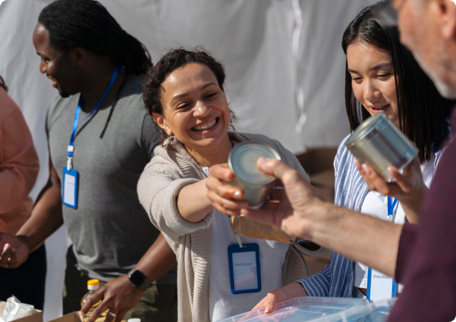

Somos uma Empresa que da as melhores soluções aos alimentos que não serão vendidos, seja pela estética ou próximo ao prazo de validade.
Como fazemos?
Oferecemos de forma centralizada ao supermercadista , quais são as lojas que tem mais incidência de produtos que estão sendo doados, para que ele possa ajustar seu processo de compra e distribuição , garantindo menos disperdício e dando um sentido Social aos alimentos não tão bons.
As ONG´S terão uma visão mais ampla aonde buscar os produtos, aumentando a quantidade de alimentos que ela vai ter para distribuir, evitando o desperdício.
